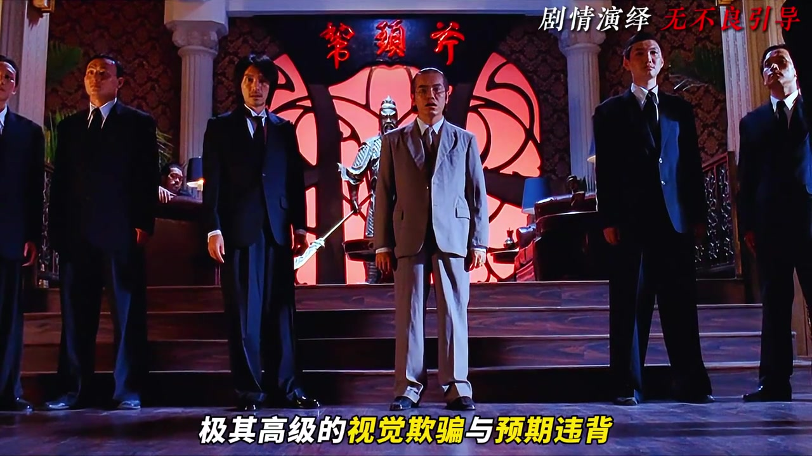
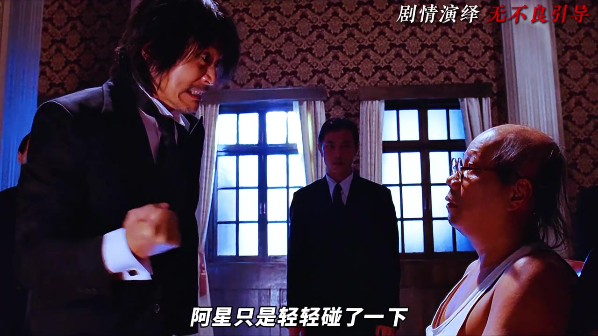
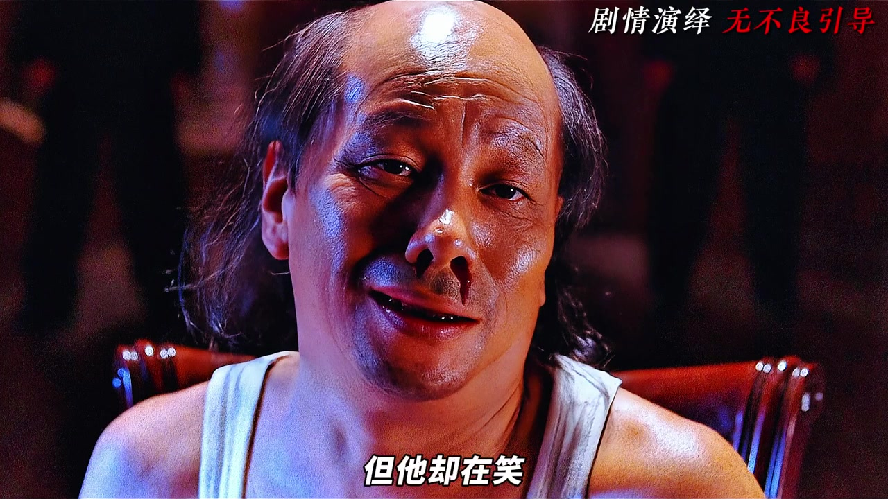
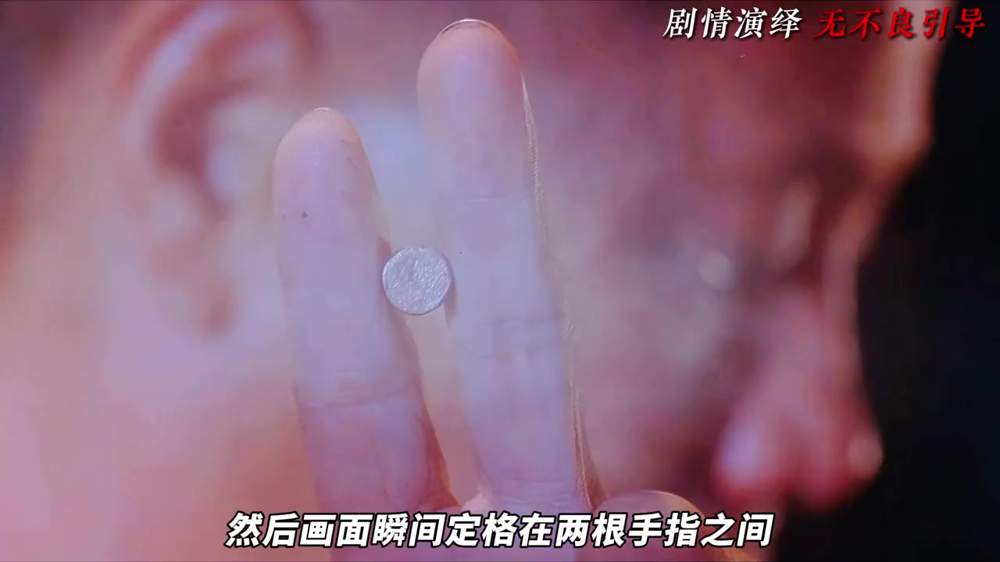
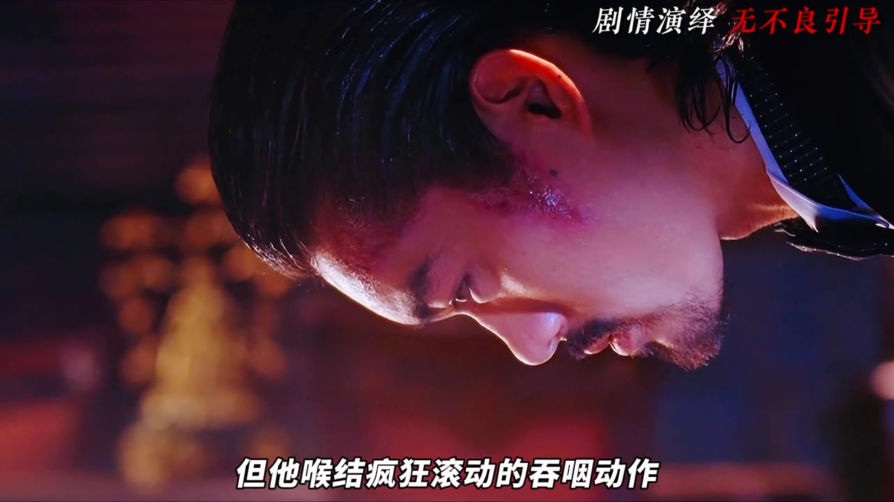
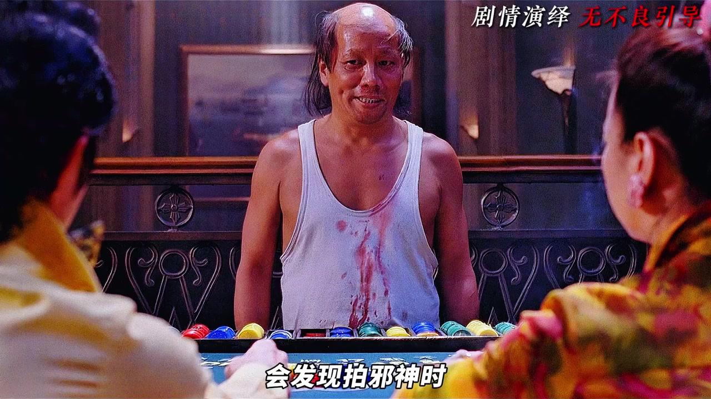

01
中文
滑稽与杀神的反差。
EN
Foolish vs. killer: one man.
表达提示contrast（反差）

Scene English · 角色分析
From Funny Old Man to Ultimate Killer
🎧 语音讲解
Opening: The Contrast Character
情境一个滑稽的老伯，一个终极杀神，同一个角色的两个极端被演活了。
滑稽与杀神的反差。
Foolish vs. killer: one man.
表达提示contrast（反差）
同一角色两个极端。
Two extremes in one role.
表达提示extreme（极端）
用contrast换一种说法
用extreme换一种说法

The Disguise
情境弯腰驼背、口齿不清，外形上的伪装让所有人放下戒心。
外形让人放下戒心。
The look disarms everyone.
表达提示disarm（解除戒心）
驼背口齿不清。
Hunched, mumbling, forgettable.
表达提示hunched（驼背的）
用disarm换一种说法
用hunched换一种说法

The Cracks
情境导演用细节埋破绽：手部的肌肉记忆、眼神的短暂锋利，暗示真实身份。
细节埋破绽。
Details plant the cracks.
表达提示crack（破绽）
眼神暴露真实。
Eyes betray the truth.
表达提示betray（暴露）
用crack换一种说法
用betray换一种说法

The Switch
情境当伪装卸下，眼神和姿态瞬间切换，观众和角色一起被震撼。
伪装瞬间卸下。
The disguise drops in an instant.
表达提示disguise（伪装）
姿态瞬间切换。
Posture switches instantly.
表达提示posture（姿态）
用disguise换一种说法
用posture换一种说法

Killer Presence
情境杀神状态的压迫感来自克制的动作，不多余的眼神，反而更令人恐惧。
压迫感来自克制。
The presence comes from restraint.
表达提示restraint（克制）
不多余的眼神更恐惧。
Fewer looks, more fear.
表达提示fear（恐惧）
用restraint换一种说法
用fear换一种说法
The Side Character's Fear
情境配角的吞咽反应被单独捕捉，用恐惧反衬火云邪神的压制力。
配角吞咽显恐惧。
A swallow betrays the fear.
表达提示swallow（吞咽）
反衬高手的压制力。
It underlines the master's dominance.
表达提示dominance（压制力）
用swallow换一种说法
用dominance换一种说法

The Tragic Core
情境角色的滑稽与杀戮背后是悲情底色，反差越大，悲剧越深。
反差越大悲剧越深。
Bigger contrast, deeper tragedy.
表达提示tragedy（悲剧）
欢乐背后是悲情。
Joy hides the sorrow.
表达提示sorrow（悲伤）
用tragedy换一种说法
用sorrow换一种说法
Summary: Two Sides, One Man
情境滑稽与杀神是一体两面，这才是角色的厚度，好角色都有阴影。
一体两面的角色。
The character has two faces.
表达提示two faces（两面）
厚度来自阴影。
Depth comes from shadow.
表达提示depth（厚度）
用two faces换一种说法
用depth换一种说法
用「contrast」替换表达
用「extreme」替换表达
用「disarm」替换表达
用「hunched」替换表达
用「crack」替换表达
用「betray」替换表达
用「disguise」替换表达
用「posture」替换表达
用「restraint」替换表达
用「fear」替换表达
用「swallow」替换表达
用「dominance」替换表达
用「tragedy」替换表达
用「sorrow」替换表达
用「two faces」替换表达
用「depth」替换表达
滑稽伪装让杀神出场更有冲击
吞咽、散逃都是衬托
滑稽与杀神同体才是角色的力量